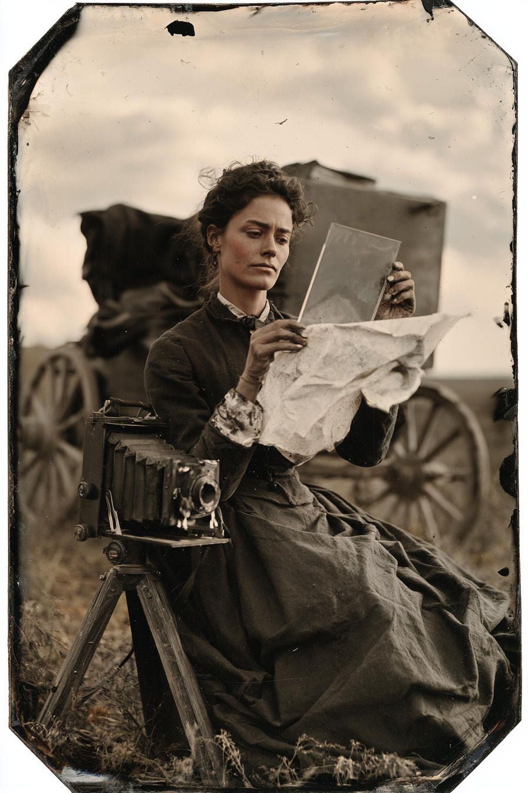

Archetyp: EXPLORER (Entdecker)
Einsteigerfigur: Bemerken W8 plus Aufmerksamkeit — sie ist die Figur, die sieht, was da ist.
Sie fotografiert jede Stadt zwischen Cheyenne und Santa Fe, weil ihr Bruder auf einer davon im Hintergrund stehen könnte. Auf dreien steht etwas anderes.
| Agility | d6 | 1 |
| Smarts | d8 | 2 |
| Spirit | d6 | 1 |
| Strength | d4 | 0 |
| Vigor | d6 | 1 |
| Skill | Attr. | Die | Pts. |
|---|---|---|---|
| Survival | Sma | d8 | 3 |
| Notice | Sma | d8 | 2 |
| Shooting | Agi | d6 | 2 |
| Riding | Agi | d6 | 2 |
| Science | Sma | d6 | 2 |
| Fighting | Agi | d4 | 1 |
| Weapon | Range | Damage | AP | RoF | Wt. | Cost |
|---|---|---|---|---|---|---|
| Winchester '73 (.44-40) | 24/48/96 | 2W8–1 | 2 | 1 | 5 | $25 |
| 15 Schuss · Mindeststärke W6, sie hat W4: –1 auf Schießen | ||||||
| Colt Rainmaker (.32) | 12/24/48 | 2W6 | 1 | 1 | 1 | $8 |
| 6 Schuss, doppelt wirkend · Mindeststärke W4 genau erfüllt | ||||||
| Messer | 3/6/12 | Stä+W4 | – | 1 | 0,5 | $2 |
| zum Zuschneiden von Platten | ||||||
Woodsman: +2 auf Überleben und Heimlichkeit draußen, +2 aufs Spurenlesen
Alertness: +2 auf Bemerken · Rich: $750 Startgeld und laufendes Einkommen
Hintergrund. Jo Pike lernte das Nassplattenverfahren im Atelier ihres Vaters in Springfield, Illinois, wo sie sechs Jahre lang Hochzeiten und Leichenporträts entwickelte. Ihr Bruder Wesley ging ’82 mit einem Vermessungstrupp der Bahn ins Uinta-Becken und kam nicht zurück; von den elf Männern kamen vier zurück, und keiner von ihnen erinnerte sich an denselben Tag. Jo verkaufte das Atelier, kaufte einen Wagen und fährt seither von Ort zu Ort und fotografiert Straßenzüge, Kirchweihen, Viehmärkte und ganze Belegschaften — offiziell, weil man dafür bezahlt wird, tatsächlich, weil auf einer Gruppenaufnahme von hundert Leuten irgendwann ein Gesicht am Rand stehen könnte, das sie kennt. Sie hat inzwischen über neunhundert Platten belichtet und geht jede einzelne mit einer Lupe durch.
Build. Geschicklichkeit W6, Verstand W8, Geist W6, Stärke W4, Konstitution W6 · Parade 4, Robustheit 5 Überleben W8, Bemerken W8, Schießen W6, Reiten W6, Wissenschaft W6, Kämpfen W4 Talente: Woodsman (Naturbursche — Voraussetzung ist Überleben W8, nicht W6; das ist die Falle, in die die Netzlisten laufen), Alertness (Aufmerksamkeit), Rich (Reich) Handicaps: Driven (Angetrieben) — Major: sie sucht Wesley, und sie fährt jeden Umweg, den ein Hinweis wert sein könnte · Cautious (Vorsichtig) — Minor · Loyal — Minor Bemerken W8 plus Aufmerksamkeit macht effektiv W8+2 auf die Fertigkeit, die der Marshal am häufigsten abfragt. Wer noch nie gespielt hat, ist damit in jeder Szene beschäftigt, ohne eine einzige Sonderregel zu brauchen.
Aufhänger. Auf drei Platten aus drei verschiedenen Countys — Ogallala im Mai, Trinidad im Juli, Raton im August — steht dieselbe Gestalt am linken Bildrand, halb aus dem Rahmen, in derselben Haltung, mit demselben zu langen Mantel. Jo hat bei allen dreien selbst ausgelöst und weiß mit Sicherheit, dass dort niemand stand. Auf der Platte aus Raton ist der Kopf schärfer als der Rest des Bildes, was nach den Regeln des Verfahrens bedeutet, dass er sich während der ganzen Belichtung nicht einen Millimeter bewegt hat. Sie ist Naturwissenschaftlerin genug, um zu wissen, dass es dafür eine Erklärung geben muss, und Fotografin genug, um zu wissen, dass es keine gibt.
Warum es Spaß macht. Du bist die Ausrüstung der Gruppe: ein Wagen, ein gutes Pferd, Geld und eine Kamera, mit der man Beweise mitnehmen kann — und in Deadlands ist eine Fotoplatte ein Gegenstand, der Dinge zeigt, die niemand gesehen hat. Regeltechnisch ist es der harmloseste Bogen überhaupt: zwei Talente, die immer gelten, ein Handicap, das dir sagt, wohin du reist, und eine Fertigkeit, mit der du in jeder Szene etwas tun darfst.
Regelgrundlage: Regelnotizen · Archetyp-Notizen